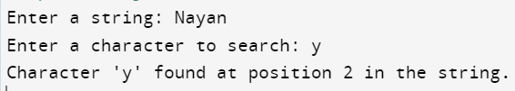

#include<stdio.h>
#include<string.h>
int linearSearchIterative(char *str, char ch) {
int length = strlen(str);
for (int i = 0; i < length; i++) {
if (str[i] == ch) {
return i;
}
}
return -1;
}
int main() {
char inputString[100];
char searchChar;
printf("Enter a string: ");
scanf("%s", inputString);
printf("Enter a character to search: ");
scanf(" %c", &searchChar); // Note the space before %c to consume any whitespace character
int result = linearSearchIterative(inputString, searchChar);
if (result != -1) {
printf("Character '%c' found at position %d in the string.\n", searchChar, result);
} else {
printf("Character '%c' not found in the string.\n", searchChar);
}
return 0;
}
